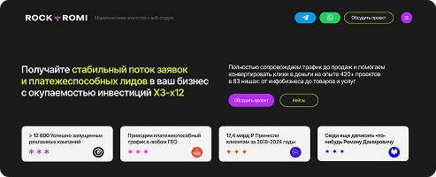

01 / UI САЙТА

Страница настройки рекламы
- Задача
- Выгодно представить услуги агентства по работе с трафиком
- Решение
- Наглядно визуализировал пошаговый процесс работы, подходящий пользователю к оформлению заявки
- UI фокус
- Архитектура макета и иерархия CTA-элементов